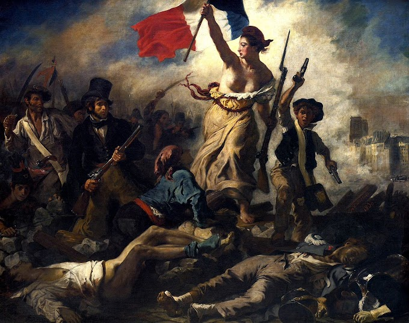

Pensadores e adeptos ao movimento iluminista realizaram protestos nesta segunda-feira (5) em prol de um novo movimento, o liberalismo, em que se prega o fim da intervenção do estado na economia e o livre comércio, o pensador Adam Smith anda popularizando essas novas ideias e grande parte da população vem abraçando essa ideia